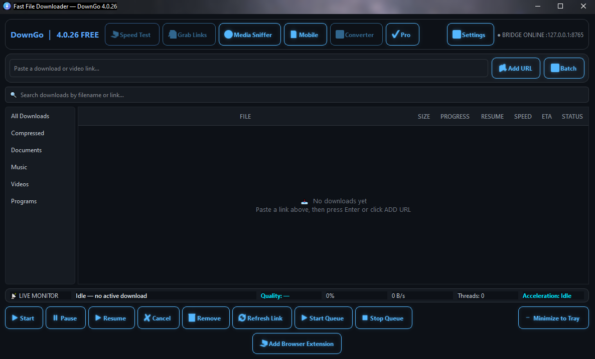
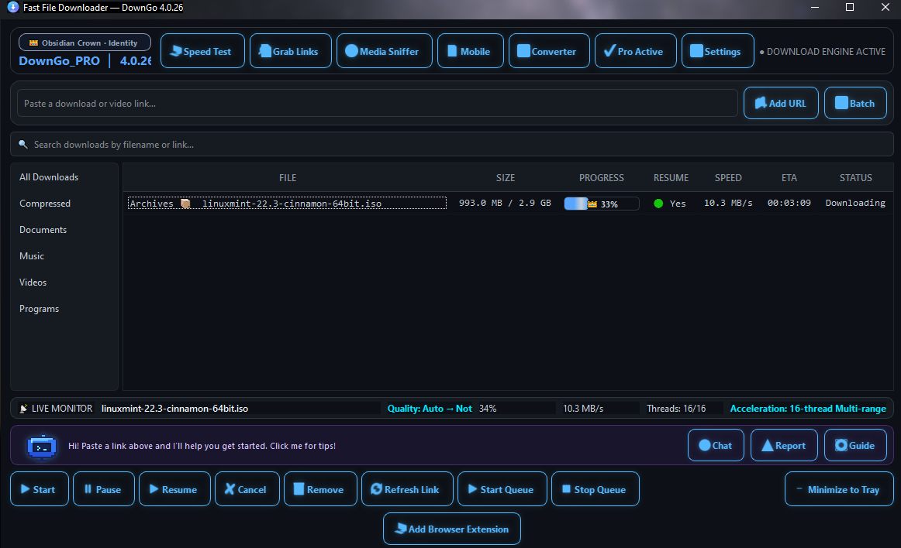
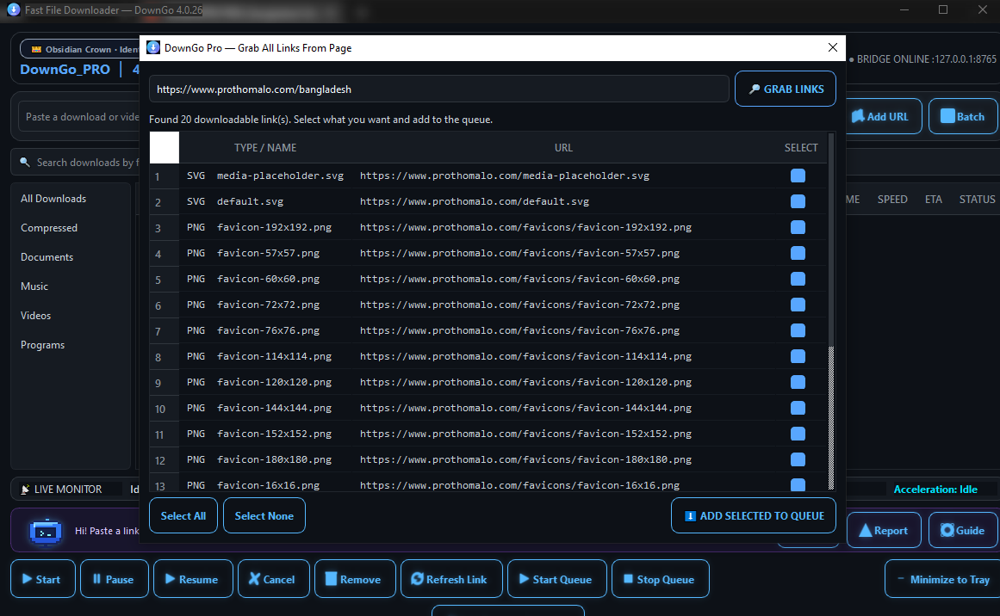
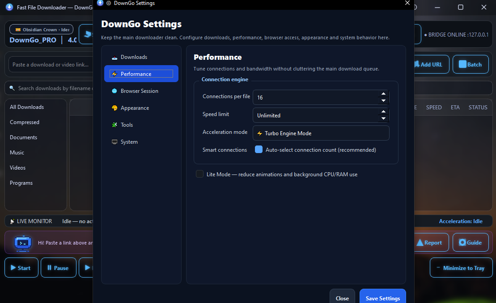

Pause, resume, retry
Control supported transfers and recover from interruptions when the source allows it.
DownGo · Fast Download Manager · Rafix Technologies
Download, organize, and monitor files from one app. Use pause, resume, retry, and queue controls, with multi-connection downloading when supported by the source.
Free to download with in-app purchases. Speed and resume support depend on the source and your network.

Built for everyday transfers
Control supported transfers and recover from interruptions when the source allows it.
Organize downloads with queue tools. Pro adds advanced queue controls and scheduling.
The Free version supports up to 4 parallel connections; Pro supports up to 16. Results depend on the source and your network.

Track every transfer
See the downloaded size, progress, resume availability, current speed, estimated time remaining, and transfer status in the main window. Start, pause, resume, cancel, or queue transfers from the controls below.

Collect page links · Pro
The Grab Links tool scans a page for downloadable links and presents them in a list. Choose which ones to add to DownGo’s queue, and review links before starting transfers.

Tune performance
Adjust connections per file, apply a speed limit, choose an acceleration mode, or enable Smart Connections. Lite Mode reduces animations and background CPU and memory use.
Get DownGo
See the official listing for current availability, in-app purchase information, and regional details.